Every day
Fish Hooman
The everyday meal of Goa rather than a special one — the day’s catch in coconut and kokum, with rice. Judge a kitchen on this.
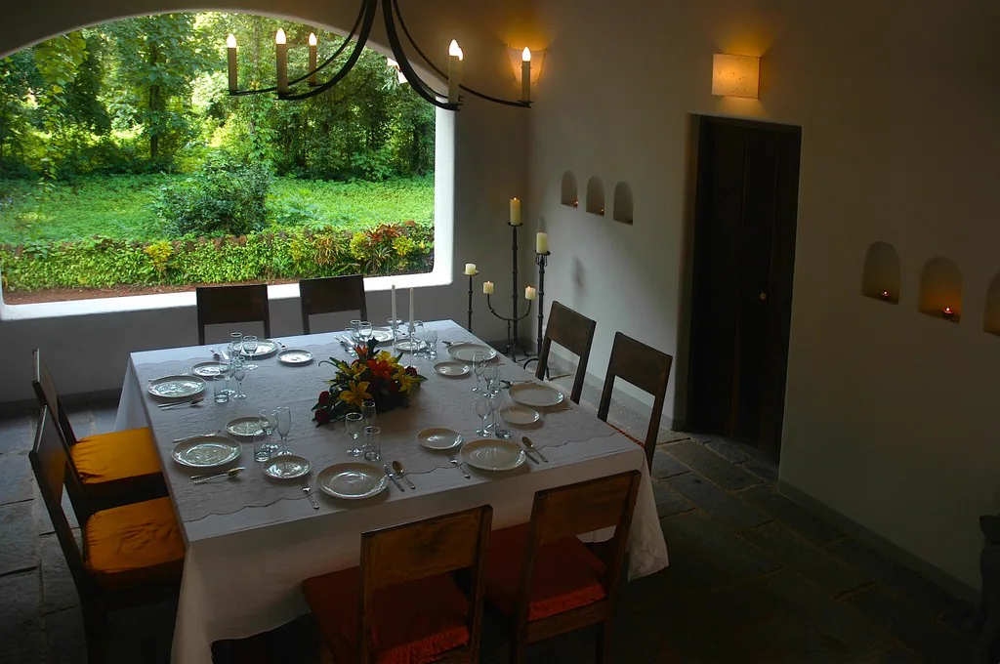
Scroll
It is an invitation to stay longer. Across Goa, hospitality is expressed through food, conversation and an instinct to make time for others — and that is where a stay here begins.
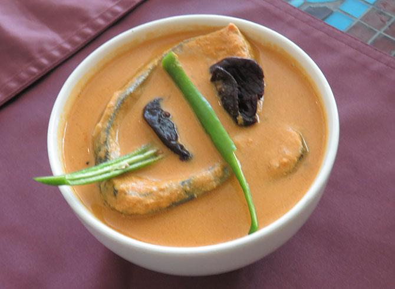
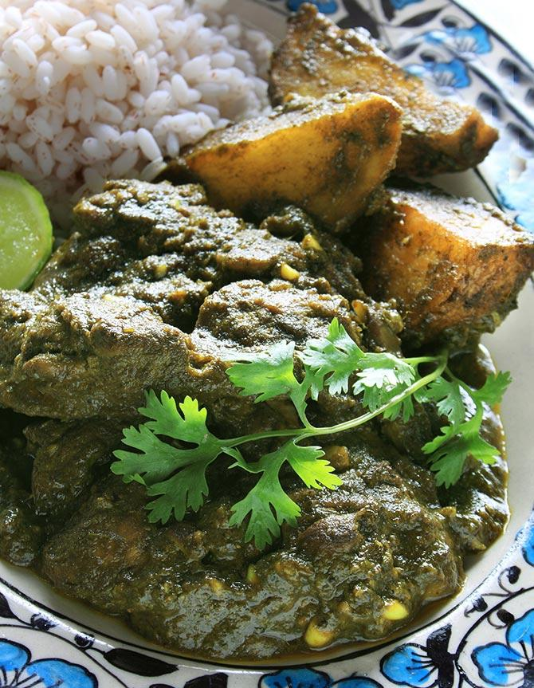
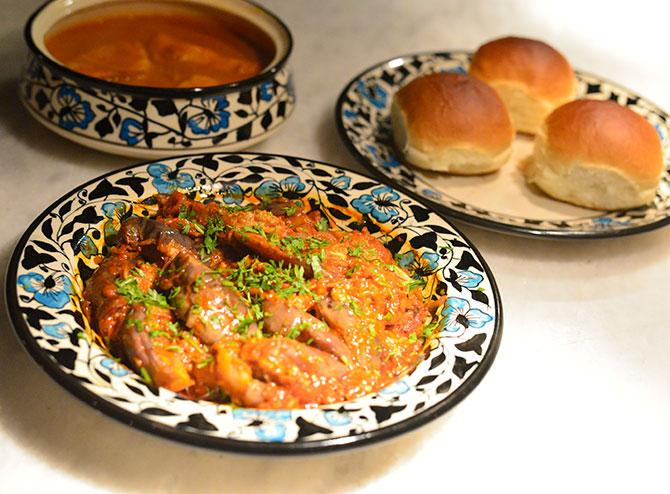
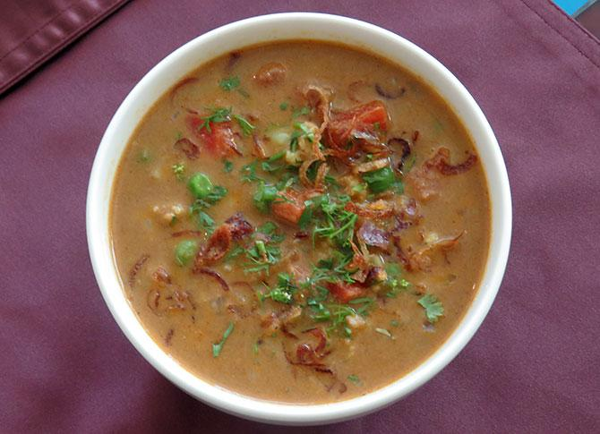
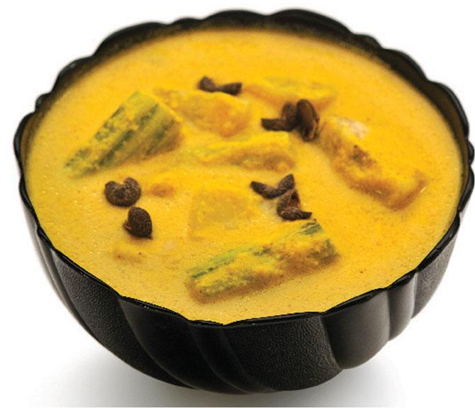
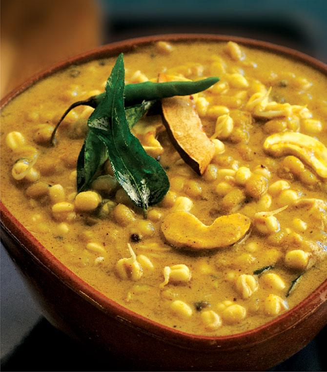
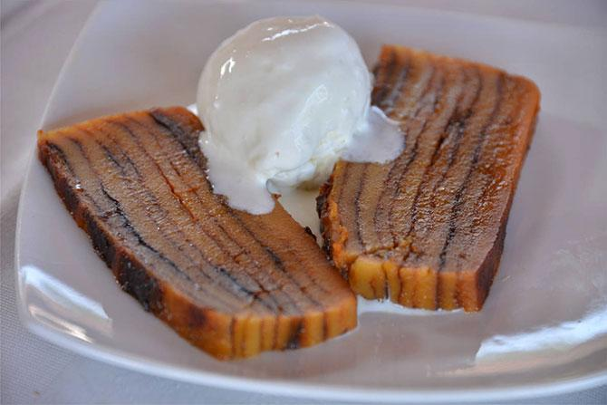
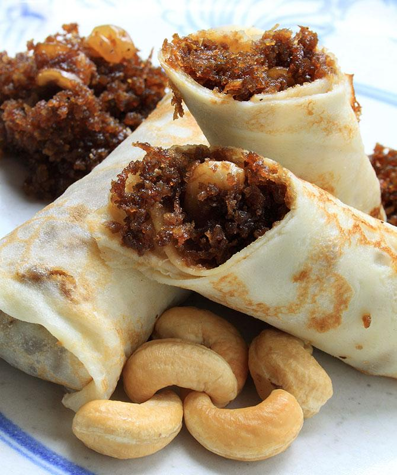
A complimentary English breakfast each morning, and unlimited tea, coffee and juices through the day. Dinner is provided on request, and there is a barbeque in the gazebo for the evenings you would rather cook outside.
Tell us before you arrive if you would like a cook for part of your stay, or if anyone in your party eats differently.
Arrange it when bookingWhat to eat
Goan cooking is coastal food built on coconut, kokum, tamarind and a long Portuguese inheritance. These are the ones worth ordering by name.
Every day
The everyday meal of Goa rather than a special one — the day’s catch in coconut and kokum, with rice. Judge a kitchen on this.
Green
Coriander, mint, green chilli and lime, ground to a paste. Carried to Goa from Mozambique by Portuguese soldiers.
Vinegar and garlic
From carne de vinha d’alhos — meat in wine and garlic. Goa swapped in palm vinegar and Kashmiri chilli. Sour before it is hot.
Roasted
Dark with roasted coconut and a long list of spices. Usually chicken; this is the one to ask for without.
Festival
Mixed vegetables and beans in coconut, sharpened with teppal. A temple dish, so no onion and no garlic.
Morning
Sprouted green gram in a thin coconut gravy. Breakfast, more often than not, with bread from the poder.
To finish
Layered coconut and egg-yolk cake, baked one layer at a time. Traditionally Christmas, in practice year-round.
Teatime
A thin pancake rolled around coconut and jaggery. The simplest thing on this page, and the one guests ask for again.
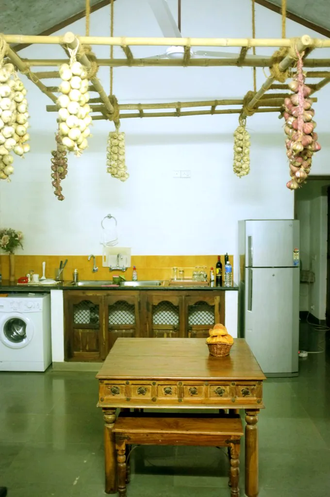
Every morning
The village baker still comes by on a bicycle, twice a day, sounding a horn. Poi, undo, kankonn — the breads are a Portuguese inheritance that stayed, and they are best eaten within the hour.
It is one of the few daily rituals in Goa that has not changed at all, and it reaches this house as it reaches every other in Loutolim.
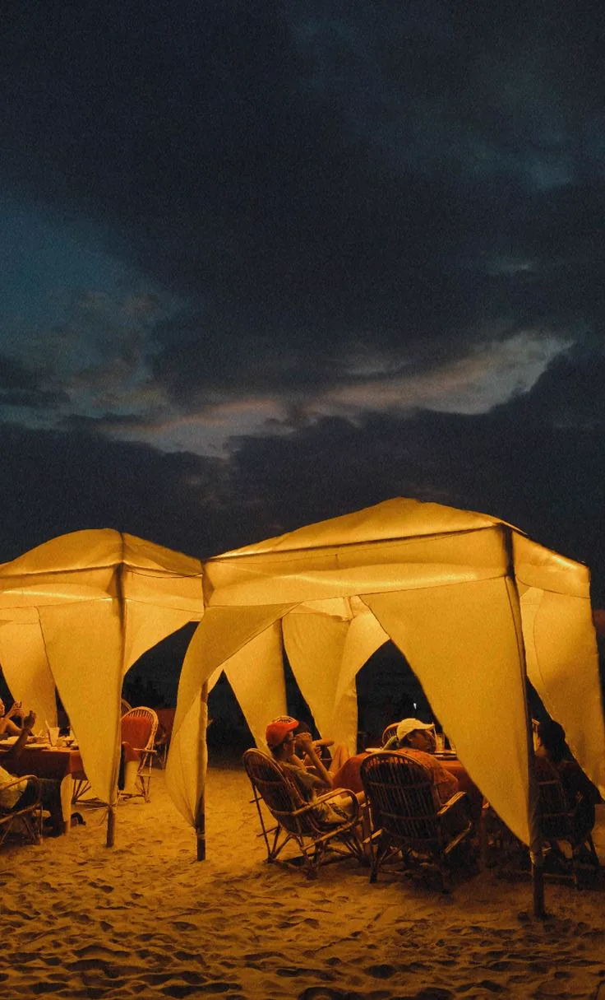
Nearby
The beach shacks at Betalbatim, Colva and Benaulim cook the day's catch fifteen minutes from the gate, and Margao's market is ten minutes the other way.
Ask us when you arrive — the places worth the drive change with the season, and we would rather tell you in person than print a list that dates.
One letter a week from the house, and a note when the season turns. No offers, no campaigns — and you can stop it in one click.
Subscribe